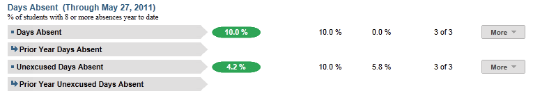
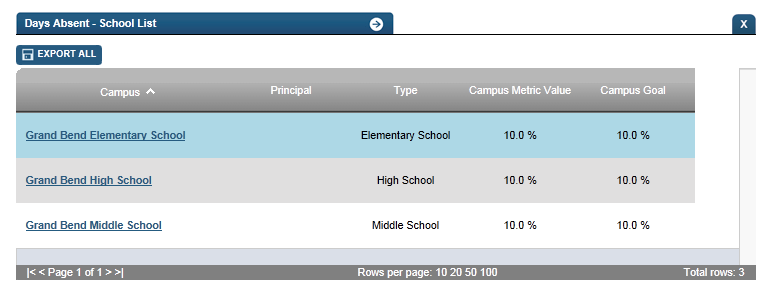

Dashboard Metrics


Days Absent
Background
Because of the value of attendance as a key leading indicator of student performance, virtually every performance management dashboard should include a measure of student attendance. This need was echoed in focus groups conducted with educators, in which attendance was consistently named as one of the top three student data needs.
Primary Metric
- Days Absent: the total number of days a student has been absent year to date.
Related Metric
- Class Period Absence Rate: the percent of class periods a student is in attendance during the last four weeks, last eight weeks and the entire year to date, with comparison to campus goals for each.
- Daily Attendance Rate: the percent of days a student is in attendance during the last four weeks, last eight weeks and the entire year to date, with comparison to campus goals for each.
User Interface
Dashboard Examples
Figure 1 shows the Days Absent metric as seen on the student dashboard.

Figure 1 Ed-Fi Days Absent Metric
Status Definition
The Status Indicator is determined by district-specific thresholds (district goals) which are set at the district level. The Ed-Fi default attendance threshold is 8 days absent.
Table 2 lists the status indicators and trend comparisons as seen on the student dashboard.
Metric Indicator | Trend Comparisons | |||
Metric Name |
| Metric Status Indicator | Compares: | To: |
Days Absent | Year to Date | Green (Numeral) = if Days Absent is less than or equal to campus goal Red (Percentage) = if Days Absent is greater than campus goal | Prior school year | Current School Year |
(a) The Value column displays the total number of days the student is absent.
Trend Definition
Table 3 lists the trend indicators for the Daily Attendance Rate metric.
Trend Indicators: Objective is to indicate Daily Attendance Rate | |||
| Up green | If the value for the current time frame is more than 5 percentage points higher than the prior time frame. | |
| Unchanged | If the value for the current time frame is less than or equal to 5 percentage points higher or less than or equal to 5% percentage points lower. | |
| Down red | If the value for the current time frame is more than 5 percentage points lower than the prior time frame. | |
The trend does not display for the first occurrence of a time frame since data is not available.
Periodicity
Best practice is to load the data for this metric daily.
Recommended Load Characteristics | |
| Calendar | Throughout the school year |
| Frequency of data load | Daily, Weekly, Monthly |
| Latency | 4 weeks |
| Interchange schema | Interchange-StudentAttendance.xsd |
Tooltips
The standard tool tips for the metric definition, column headers, and help functions display for this metric.
 is ‘No change from the prior period'
is ‘No change from the prior period' is ‘Getting worse from the prior period'
is ‘Getting worse from the prior period' is ‘Getting better from the prior period'
is ‘Getting better from the prior period'
Business Rules
The Days Absent district-level metric shows the percent of students in the district with 8 or more days absent year-to-date. It includes two granular metrics: Days Absent and Unexcused Days Absent. The Days Absent metric shows students with 8 or more days absent, including excused and unexcused absences. The Unexcused Days Absent metric only reflects the percent of students who have 8 days of unexcused absences year-to-date.
- Attendance should be calculated at the student level
Calculation
The number of days absent is a simple calculation of the percentage of students who have 8 or total absences (excused and unexcused) year to date over the number of students with attendance data for the district. The default goal is 10%.
The number of unexcused days absent is a simple calculation of the percentage of students who have 8 or more unexcused absences year to date over the number of students with attendance data for the district. The default goal is 10%.
Calculated Values | ||
Days absent = number of students with eight or more absences year to date/the total number of students with attendance data for the district | ||
Unexcused Days Absent = number of students with eight or more unexcused absences year-to-date / the total number of students with attendance data for the district. |
Data Anomalies
- Currently there is no way to account for students who withdraw and re-enroll. The attendance metrics account for attendance from the most recent enrollment date. Detail views will show a more complete history.
- The denominator for attendance metrics is not dynamic. If a student enters school later than the first day, he is considered present for the entire time he missed.
- Early education and Pre-kindergarten students that have attendance data will be included in the days absent campus rollup; the denominator of included students may be larger than average daily attendance on campuses with these students.
- The days absent drilldown will only show the breakdown of days absent for grading periods that have ended. Thus the year to date number may be slightly higher than the total of the absences in the grading periods if the student has been absent in the current grading period. The year to date number will be the most current number and is updated with nightly loads.
Footnotes
Date of Refresh
Best practice is for the date of last data refresh to appear next the metric in the following format:
- (Through April 22, 2010)
Drill Downs
The following Drilldown options should be available at the district level:
- Campus List: should be a campus list of all campuses in the district.

Ed-Fi School List Drilldown
Items to be addressed when applicable:
- Attendance should be calculated at the student level